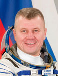

Федеральное государственное бюджетное учреждение
«Научно-исследовательский испытательный Центр подготовки космонавтов им. Ю.А. Гагарина»
|
Федеральное государственное бюджетное учреждение |
 |
Biographical Data |
||
Oleg Viktorovich NovitskIy
Soyuz TMA-M Commander
ISS Flight Engineer
Test-cosmonaut of Yuri Gagarin Cosmonaut Training Center
Lieutenant-Colonel of the Russian Air Force
PERSONAL DATA: Born October 12, 1971, in Cherven, Minsk Region, Belorussia. Married to Yulia Vladislavovna Novitskaya (nee Andreeva). They have one daughter, Yana, born in 1996. His mother, Valentina Eduardovna Novitskaya, resides in Cherven, Belorussia.
EDUCATION: Novitskiy graduated from school # 2 in Cherven in 1988 and entered the Borisoglebsk Military Pilot School named after V. Chkalov. In 1994 he graduated from the Kachinskoye Military Pilot School named after A. Myasnikov, where he studied at the department specializing in command tactical aviation. Novitskiy was certified as a pilot-engineer.
In 2006 he graduated from the Yuri Gagarin Air Force Academy specializing in military units/Air Force detachments management.
EXPERIENCE: After graduation from the military school, September to December 1995, Novitskiy served as a pilot of the pilot-instructor fighter aviation regiment of V. Chkalov Training Center.
December 1995 to June 2004 he served as a pilot, senior pilot, flight commander and air squadron deputy commander at the fighter air regiment of the 1st Guard Composite Air Division of the 4th Air Army and the 4th Air Force and Air Defense Army of the North Caucasus Military Command.
After graduation from the Academy in 2006 Novitskiy served as a commander of an attack air squadron.
By the time of selection to the Cosmonaut Corps he has mastered skills of piloting the Л-39 and Су-25 aircraft. He has logged a total of 700 hours of flight time. He is a Class 2 military pilot. Novitskiy is a qualified paratrooper instructor and military diver.
SPACEFLIGHT TRAINING: In February 2007 Novitskiy was selected as a test-cosmonaut candidate of a Cosmonaut Corps of the Yuri Gagarin Cosmonaut Training Center.
In the timeframe of February 2007 to July 2009 he completed basic spaceflight training and passed state exams with excellent grades.
On August 1, 2009, he was qualified as a test-cosmonaut by the Interdepartmental Qualification Board.
August 2009 to March 2010 he took the ISS advanced training course.
March 2010 to May 2012 he trained as the ISS 31/32 backup crewmember, the Soyuz TMA-M Commander/ISS Flight Engineer.
Since May 2012 he is training as the ISS 33/34 prime crewmember, the Soyuz TMA-M Commander/ISS Flight Engineer.
AWARDS: The Ministry of Defense of Russian Federation medals: “For Participation in Military Operations”, “For Military Virtue”, II degree, “For Distinguished Military Service”, I, II and III degree, “For Service in the Air Force”. Novitskiy has “For Personal Courage” wrist watch award and a title of a Veteran of Military Operations.
HOBBIES: Football, tourism, hunting, fishing, table tennis, reading.
JULY 2012